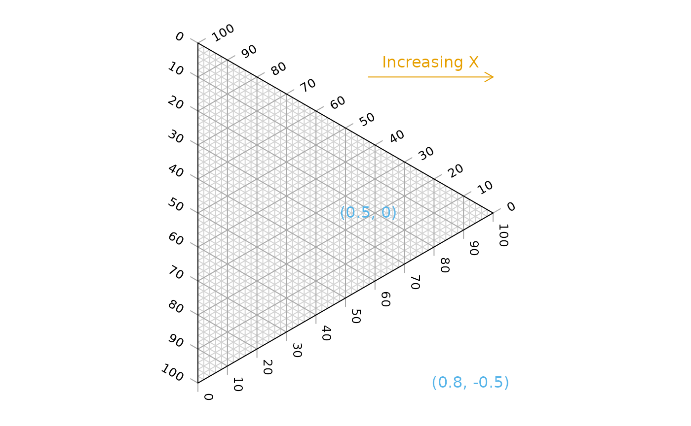

‘Ternary’ is an R package to allow the creation of ternary plots in the standard R graphics environment. I hope that it proves simple to use.
For simple use cases, generate Ternary plots using the point-and-click Shiny app:
install.packages('Ternary')
Ternary::TernaryApp()For greater control over your plots, use the full R implementation.
Install the package with:
install.packages('Ternary')Or if you want the latest development version of the package:
if (!require('devtools')) install.packages('devtools')
install_github('ms609/Ternary')Once the package is installed, load it into the current R session with
There are two stages to creating a ternary plot: first, rendering the plot, styled as you like it and pointing in any of the four compass directions; secondly, adding data.
Create a blank plot
At its simplest, all you need to do is type

The following charts show which corners are which, under different orientations:
par(mfrow = c(2, 2), mar = rep(0.5, 4))
for (dir in c('up', 'right', 'down', 'le')) {
TernaryPlot(point = dir, atip = 'A', btip = 'B', ctip = 'C',
alab = 'Aness', blab = 'Bness', clab = 'Cness')
TernaryText(list(A = c(10, 1, 1), B = c(1, 10, 1), C = c(1, 1, 10)),
col = cbPalette8[4], font = 2)
}
Plot two stylised plots side by side, and plot data
par(mfrow = c(1, 2), mar = rep(0.3, 4))
TernaryPlot(alab = "Redder \u2192", blab = "\u2190 Greener", clab = "Bluer \u2192",
lab.col = c('red', 'darkgreen', 'blue'),
point = 'right', lab.cex = 0.8, grid.minor.lines = 0,
grid.lty = 'solid', col = rgb(0.9, 0.9, 0.9), grid.col = 'white',
axis.col = rgb(0.6, 0.6, 0.6), ticks.col = rgb(0.6, 0.6, 0.6),
axis.rotate = FALSE,
padding = 0.08)
# Colour the background:
cols <- TernaryPointValues(rgb)
ColourTernary(cols, spectrum = NULL)
# Add data points
data_points <- list(
R = c(255, 0, 0),
O = c(240, 180, 52),
Y = c(210, 222, 102),
G = c(111, 222, 16),
B = c(25, 160, 243),
I = c(92, 12, 243),
V = c(225, 24, 208)
)
AddToTernary(points, data_points, pch = 21, cex = 2.8,
bg = vapply(data_points,
function (x) rgb(x[1], x[2], x[3], 128,
maxColorValue = 255),
character(1))
)
AddToTernary(text, data_points, names(data_points), cex = 0.8, font = 2)
legend('bottomright',
legend = c('Red', 'Orange', 'Yellow', 'Green'),
cex = 0.8, bty = 'n', pch = 21, pt.cex = 1.8,
pt.bg = c(rgb(255, 0, 0, 128, NULL, 255),
rgb(240, 180, 52, 128, NULL, 255),
rgb(210, 222, 102, 128, NULL, 255),
rgb(111, 222, 16, 128, NULL, 255)),
)
###
# Next plot:
###
TernaryPlot('Steam', 'Ice', 'Water',
grid.lines = 5, grid.lty = 'dotted',
grid.minor.lines = 1, grid.minor.lty = 'dotted',
point = 'West')
HorizontalGrid()
middle_triangle <- matrix(c(
30, 40, 30,
30, 30, 40,
55, 20, 25
), ncol = 3, byrow = TRUE)
TernaryPolygon(middle_triangle, col = '#aaddfa', border = 'grey')
TernaryLines(list(c(0, 100, 0), middle_triangle[1, ]), col = 'grey')
TernaryLines(list(c(0, 0, 100), middle_triangle[2, ]), col = 'grey')
TernaryLines(list(c(100, 0, 0), middle_triangle[3, ]), col = 'grey')
TernaryArrows(c(20, 20, 60), c(30, 30, 40), length = 0.2, col = 'darkblue')
Styling points
More sophisticated plots can be created, for example styling each point according to additional properties of the data, in a manner analogous to the standard plotting functions:
par(mar = rep(0.3, 4))
dat <- data.frame(sio2 = c(2, 4, 10, 20),
fe2o3 = c(5, 6, 7, 8),
al2o3 = c(12, 11, 10, 9),
grain_size = c(20, 16, 12, 8),
reflectance = c(80, 63, 61, 20))
spectrumBins <- 5
mySpectrum <- viridisLite::viridis(spectrumBins)
binnedReflectance <- cut(dat$reflectance, spectrumBins)
dat_col <- mySpectrum[binnedReflectance]
sizeBins <- 5
mySizes <- seq(0.5, 2.4, length.out = sizeBins)
binnedSize <- cut(dat$grain_size, sizeBins)
dat_cex <- mySizes[binnedSize]
TernaryPlot(atip = expression(SiO[2]),
btip = expression(paste(Fe[2], O[3], ' (wt%)')),
ctip = expression(paste(Al[2], O[3]))
)
TernaryPoints(dat[, c('sio2', 'fe2o3', 'al2o3')],
cex = dat_cex,
col = dat_col,
pch = 16
)
legend('topleft', col = dat_col, pch = 16,
legend = paste(binnedReflectance, '%'),
title = 'Reflectance', bty = 'n', cex = 0.8)
legend('topright', pt.cex = dat_cex, pch = 16,
legend = paste(binnedSize, '\u03bcm'),
title = 'Grain size', bty = 'n', cex = 0.8)
See the ‘Points’ tab of the shiny app for a point-and-click implementation.
Cartesian coordinates
It is also possible to use cartesian coordinates to plot onto the graph.
By default, the plotting area is a 1×1 square.
par(mar = rep(0, 4)) # Reduce margins
TernaryPlot(point = 'right', clockwise = FALSE)
cat("X range in this orientation:", TernaryXRange())## X range in this orientation: -0.0669873 0.9330127
cat("Y range in this orientation:", TernaryYRange())## Y range in this orientation: -0.5 0.5
arrows(x0 = 0.5, y0 = 0.4, x1 = sqrt(3)/2, y1 = 0.4, length = 0.1,
col = cbPalette8[2])
text(x = mean(c(0.5, sqrt(3)/2)), y = 0.4, "Increasing X", pos = 3,
col = cbPalette8[2])
text(x = 0.5, y = 0, "(0.5, 0)", col = cbPalette8[3])
text(x = 0.8, y = -0.5, "(0.8, -0.5)", col = cbPalette8[3])
Note the anticlockwise axis labelling on this plot, obtained using clockwise = FALSE.
Contours
A plot can be coloured and contoured according to the output of a mathematical expression:
par(mar = rep(0.2, 4))
TernaryPlot(alab = 'a', blab = 'b', clab = 'c')
FunctionToContour <- function (a, b, c) {
a - c + (4 * a * b) + (27 * a * b * c)
}
values <- TernaryPointValues(FunctionToContour, resolution = 24L)
ColourTernary(values)
TernaryContour(FunctionToContour, resolution = 36L)
or by according to the density of points across the plot:
par(mar = rep(0.2, 4))
TernaryPlot(axis.labels = seq(0, 10, by = 1))
nPoints <- 4000L
coordinates <- cbind(abs(rnorm(nPoints, 2, 3)),
abs(rnorm(nPoints, 1, 1.5)),
abs(rnorm(nPoints, 1, 0.5)))
ColourTernary(TernaryDensity(coordinates, resolution = 10L))
TernaryPoints(coordinates, col = 'red', pch = '.')
TernaryDensityContour(coordinates, resolution = 30L)
The following image demonstrates the behaviour of the density estimates when points fall on boundaries of the triangular grid cells; text denotes the number of points within the cell, with cells straddling n cells contributing 1/n of a point to each cell straddled.

Magnification
Perhaps the action on a plot is constrained to a small region of ternary space. It’s possible to “zoom in” – i.e. magnify and crop the ternary plot to the region of interest.
To do this you can specify the x and y limits of the region of interest.
TernaryCoords might be useful in establishing the cartesian coordinates of a particular point in ternary space.
Ensure that dx = dy if you want an isometric plot.
my_corners <- list(c(22, 66, 12), c(22, 72, 6), c(15, 80, 5), c(12, 76, 12))
lapply(my_corners, TernaryCoords, direction = 1)## [[1]]
## [1] 0.2700000 0.1905256
##
## [[2]]
## [1] 0.3300000 0.1905256
##
## [[3]]
## [1] 0.3750000 0.1299038
##
## [[4]]
## [1] 0.320000 0.103923The padding parameter is added as a margin to each side of the region specified using xlim and ylim:
TernaryPlot(xlim = c(0.28, 0.38), ylim = c(0.1, 0.2), padding = 0.04)
# Annotate grid lines at user-specified points:
TernaryText(list(c(8, 72, 20), c(8, 82, 10)), c(20, 10), srt = -60, cex = 0.9,
col = 'darkgrey')
TernaryText(list(c(10, 69, 21), c(20, 64, 16)), c(10, 20), srt = 0, cex = 0.9,
col = 'darkgrey')
# Plot desired polygon
TernaryPolygon(my_corners, col = '#2cbe4e')
# Show xlim, ylim and padding, using cartesian coordinates
lines(c(0.28, 0.28, 0.38, 0.38, 0.28), c(0.1, 0.2, 0.2, 0.1, 0.1))
text(0.28, 0.15, "xlim[1]", pos = 2, srt = 90)
text(0.38, 0.15, "xlim[2]", pos = 4, srt = 90)
text(0.33, 0.1, "ylim[1]", pos = 1)
text(0.33, 0.2, "ylim[2]", pos = 3)
text(0.38, 0.1, '<padding>', pos = 4, cex = 0.75)
text(0.38, 0.1, '<padding> ', pos = 2, cex = 0.75, srt = 90)
Bugs and feature requests
I hope the package proves useful. If there’s anything it can’t do that you wish it could, please let me know by opening a Github issue.